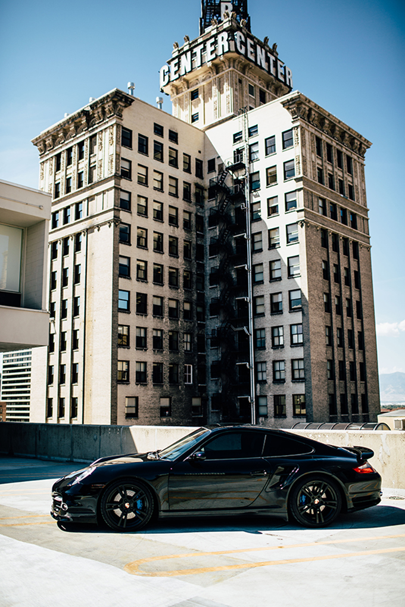

BLACKED OUT BUCKET LIST
"Be greatful but never content". One thing i've always wanted one day is to own and be able to customize a super car. It's great to have goals that keep you on your purpose in life whether they be short or long-term.
Sometimes major events happen that change your path and we forget about the things that we had wanted to accomplish. As those events pass and things change sometimes it's best to remind ourselves of what we always aspired to achieve and revisit our bucket list.